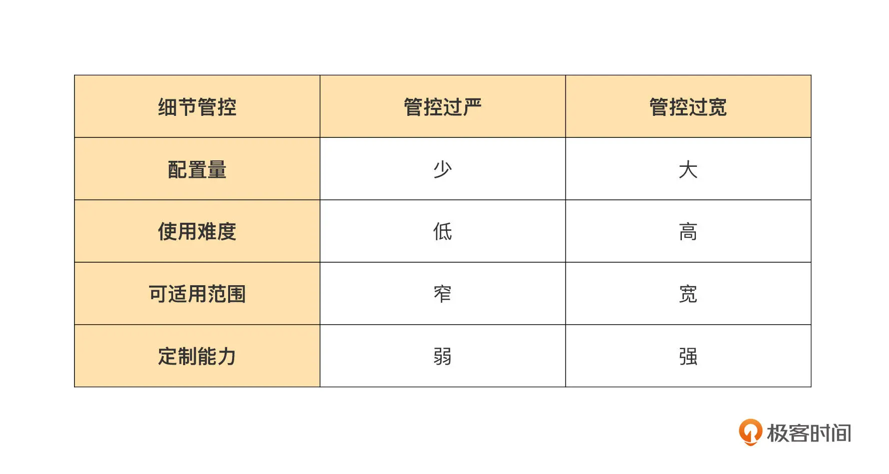

- 00 开篇词｜抛开争论，先来看看真正的低代码.md.html
- 01｜低代码平台到底是什么样的？.md.html
- 02｜低代码到底是银弹，还是行业毒瘤？.md.html
- 03｜低代码的天花板：一个完备的低代码平台应该具备哪些条件？.md.html
- 04｜演进策略：先发展通用能力还是先满足业务需求？.md.html
- 05｜基础设施 ：启动低代码平台研发之前，你需要有什么家底？.md.html
- 06｜踏出新手村便遭遇大Boss：如何架构低代码的引擎？.md.html
- 07｜结构化代码生成法：代码如何生成代码？.md.html
- 08｜布局编辑器：如何做到鱼和熊掌兼得？.md.html
- 09｜属性编辑器：如何解除Web组件属性与编辑器的耦合？.md.html
- 10 可视化编程：如何有效降低App前后端逻辑开发的技能门槛？.md.html
- 11｜亦敌亦友：Low Code与Pro Code混合使用怎样实现？.md.html
- 12 业务数据：再好的App，没有数据也是白搭.md.html
- 13｜多人协同编辑：野百合的春天为啥来得这么晚？.md.html
- 14｜编辑历史：是对Git做改造，还是另辟蹊径？.md.html
- 15｜低代码平台应该优先覆盖应用研发生命周期中的哪些功能？.md.html
- 16｜扩展与定制：如何实现插件系统并形成生态圈？.md.html
- 17｜兼容性问题：如何有效发现兼容性问题？.md.html
- 18｜兼容性问题：如何有效解决兼容性问题？.md.html
- 总结与展望｜低代码之路，我们才刚刚开始.md.html
- 捐赠
05｜基础设施 ：启动低代码平台研发之前，你需要有什么家底？
今天我们来谈谈建设低代码平台之前，必须准备好基础设施。
在过去的几年里，Web 技术得到了显著的发展，无论是功能还是性能方面，浏览器能够承载高度复杂的 Web 页面里。在这个情况下，低代码平台，如果要选择 B/S 和 C/S 的其中一种作为它的基本架构，我相信你会和我一样，毫不犹豫地选择 B/S 架构。
虽然低代码平台是一种非常复杂，综合要求很高的软件，但 Web 技术的长足发展、浏览器优秀的功能和性能，完全足以打消你对 B/S 能不能搞得定的各种疑虑。同时，几乎所有的 PC 端的业务、越来越多的移动端业务也都倾向于使用 B/S 架构（或其衍生架构），用 Web 技术来制造 Web 应用是一个非常自然而然的选择。即使需要同时输出安卓、iOS 等 Native App，利用 Web 技术也可以很好地在浏览器中模拟 Native App 效果，几乎不会在可视化开发方面造成麻烦。
Web 组件集是 Web 应用的最重要基础设施，没有之一。对于基于 B/S 架构的低代码平台来说，更是如此。而且，低代码平台的 Web 编辑器对组件集有着更多要求。Web 组件集主要在三个环节发挥作用，一是用于构筑低代码编辑器自身，二是用于构筑编辑器的开发能力，三是用于构筑业务应用。这三者基本覆盖了低代码平台 60%~80% 的功能，可见编辑器的质量和能力基本直接决定了低代码平台成败。而 Web 组件集是这一切的基石，组件集的能力彻底渗透到这三个环节的方方面面。
所以在开始打造低代码平台之前，请先确认你手里已经拥有一套值得托付的组件集。今天我会从多个角度说清楚什么样的组件集才值得你的托付。
自主可控
你可能会好奇，为啥不是一上来就提需要哪些功能。相比组件集的功能来说，我觉得自主可控更重要，主要是因为组件集的第二个职能的要求：我们需要利用组件集来构筑编辑器的开发能力。为了说清楚这一点，我需要先简单介绍一下低代码编辑器如何管控细节的。
我这里列出了一个表格，表示的是低代码编辑器在 App 开发过程中对细节的管控程度，我们主要围绕配置量、难易度、适用范围、定制能力这几个关键维度来分析。

这个表格给出了这样的结论：无论是过于严格还是过于宽松的细节管控，都对 App 的开发不利。也就是说，我们需要一种合适的细节管控手段，让 App 开发过程中的 4 个重要考量维度都有很好的表现。
我认为，对 App 常用功能做组件化封装就是这样一种非常合适的细节管控手段。组件化封装过程可以把大量的 HTML/CSS 细节屏蔽掉。如果再有一定的 UX 规范做约束，甚至可以做到几乎屏蔽所有的 HTML/CSS 细节，这也使得我们几乎可以在不需要 HTML/CSS 知识的前提下用到组件（当然这是站在低代码模式的角度说的）。至于定制能力和适用性，则是通过组件封装时暴露的 API 来说实现的。这里说的组件 API 是指组件的输入属性和输出事件，这是组件外部唯一用于影响组件行为和功能的通道。
在 2018 年和 2019 年的时候，我做过竞调。竞调显示那时候多数的低代码编辑器还在采用直接配置 HTML/CSS 的方式，把过多的细节暴露给开发者，导致这些编辑器使用起来非常啰嗦，所需的 HTML/CSS 知识一点都不能少。过于啰嗦繁复的配置过程也导致无法做出复杂的应用来。
但是现在几乎所有的低代码编辑器实现都采用组件化来管控细节了，这方面大家达成了一致意见。正因为低代码编辑器需要借助 Web 组件来管控 App 开发的细节，所以低代码编辑器的开发能力与组件就产生了关联。编辑器的编辑过程，实际上就是在收集到开发者的配置信息之后，为组件的各个 API 生成正确值的过程。这就是我在前文所说的组件集被“用于构筑编辑器的开发能力”的原因。
现在我们可以来回答为啥对组件集来说自主可控更重要的问题了。
由于编辑器需要委托组件集来管控开发的细节，所以低代码编辑器本身是没有开发能力的，它的开发能力来自于组件集，也就是说，组件集的能力直接决定了低代码编辑器的开发能力。
在这个约束下，你对组件集的定制需求是巨大的，而且有的需求是专为编辑器定制开发的，从 Pro Code 模式角度上看这种需求不可理喻。假设你把 GitHub 上一套 star 最多的组件集直接拿来用了，这种情况下即使它有着极活跃的开源社区可以快速响应你的需求，组件集的守护者们也不可能处处为你定制，因为他们从未考虑过他们的组件集会给人类以外的编辑器使用。即使你说服他们接受了定制需求，交付周期又是另一个大问题。一个小小的修改，可能需要等上数周，即使你给他们推送 PR，但 review、讨论和评估也需要时间。
你不可能会将你的研发进度与一个不可控的开源社区挂钩。最终的结果就是，要么是你 fork 一个仓库出来单干，要么自己做一个二次封装组件集，相对可控地实现定制化需求。这样做意味着你已经向“自主可控”屈服了，只是程度上多少而已。
说完技术面，我们再从另一个角度来说说：UX 规范。
当你开始讨论是否要打造一个低代码开发平台的时候，想必你已经有了一定规模的应用了，因此想必你也已经有了自己的 UX 规范了。
使用第三方组件集，就意味着要全盘接受它的 UX 规范。技术面的问题是“看不见”的、是藏在“面子”后的“里子”。而 UX 规范则是彻头彻尾的“面子”，它必须要展示在你、低代码上的业务开发者和 App 最终用户面前。
那么，涉及的各方能长期接受这样的 UX 规范吗？万一有人，特别是最终用户对此提出异议呢？这种情况下，即使是对 UX 规范的微调，局面也会非常尴尬。因为 UX 规范就像国家宪法一样，是一个国家法律的根基，即使 UX 规范做了很微小的改动，也会波及所有组件的外观。
一个工作量较小但可行的方法，是写出优先级更高的 CSS 覆盖掉原始组件的样式，但这些 CSS 样式开发难度很高且极其难以维护。更关键的是，这个做法直接侵入到了组件集的私有实现。这部分实现是没有兼容性保障的，守护团队几乎每个小版本的升级都有可能导致覆盖样式失效。
所以挑选组件集的时候，我们的第一要务是要选一套具有自主可控的组件集，即使它看起来没有那么强大。它最好是你自己或下级团队开发的，这样才具有完全的自主权。至少也要是兄弟单位开发的，而且你要有足够的权限修改它的源码。
我把给低代码编辑器使用的 Web 组件集称为可视化组件集，它和传统的 Pro Code 组件集有相似之处，也有差异。有机会我会再来详细阐述两者之间的异同点。
封装程度高
这里，我要再次提醒你所选的组件集是给编辑器使用的，而不是给人类使用的。
前面在讲自主可控时，我提到组件集的一个重要任务是用于解决低代码编辑器的细节管控问题。如果组件集的封装程度不高，就达不到细节管控的目的。比如下面这个例子，它来自于一套实际组件集，界面上显示 4 个 radio button：

这套组件集采用如下 API，HTML 部分是：
<label class="vx-radio-container">
<input type="radio" class="vx-radio" [checked]="checkedFlg">
<div class="radio-substitute"></div>
<span>选中</span>
</label>
<label class="vx-radio-container">
<input type="radio" class="vx-radio" [checked]="true" disabled>
<div class="radio-substitute"></div>
<span class="vx-radio-check-disabled">选中禁用</span>
</label>
<label class="vx-radio-container">
<input type="radio" class="vx-radio" [checked]="!checkedFlg">
<div class="radio-substitute"></div>
<span>未选中</span>
</label>
<label class="vx-radio-container">
<input type="radio" class="vx-radio" [checked]="false" disabled>
<div class="radio-substitute"></div>
<span class="vx-radio-check-disabled">未选中禁用</span>
</label>
这样的 API 问题很多，我们先不说 API 是否优雅，主要关注其相当混乱的配置方式：
- 有的是通过变量配置，比如是否选中功能（Angular 采用类似 [checked]=“var” 的格式来引用变量）；
- 有的是通过样式控制，比如是否 disabled，用 vx-radio-check-disabled 样式配置 disabled 的状态；
- 有的是通过 HTML 节点配置，比如单独使用 span 来配置 radio 的文本。
你要注意，编辑器并不怕生成一大片代码，但害怕东一榔头西一棒，这会对代码生成器造成许多不必要的麻烦。前面就是一个非常典型的例子。一个 radio 无非就 3 个配置项：文本、状态和值，这个例子采用了各不同的方式来配置，有的用了变量，有的用了样式，有的用 HTML 节点。作为对比，还有一个比较好的方式是采用数据驱动的方式统一配置，比如：
// html
<jigsaw-radios [options]="options" [value]="selected"></jigsaw-radios>
// typescript
const options = [
{label: '选中', disabled: false},
{label: '选中禁用', disabled: true},
{label: '未选中', disabled: false},
{label: '未选中禁用', disabled: true},
];
const selected = options[0];
可以看到，这个版本的 HTML 极其简洁，所有配置项均通过数据变量来实现，分别是备选列表 options 和选中条目 value 两个变量。版本 2 的封装方式是一种比较好的方式，主要体现在组件的配置项都是通过一系列变量来实现，低代码编辑只要正确生成变量的代码就可以了，无需关注 HTML/CSS 代码的生成。
下面我们再看一个示例：
// html
<jigsaw-table [data]="tableData"></jigsaw-table>
// typescript
const tableData = {
header: ['列1', '列2', '列3', '列4'],
field: ['field1', 'field12', 'field13', 'field14'],
data: [
['cell11', 'cell12', 'cell13', 'cell14'], // 第1行
['cell21', 'cell22', 'cell23', 'cell24'], // 第2行
['cell31', 'cell32', 'cell33', 'cell34'], // 第3行
['cell41', 'cell42', 'cell43', 'cell44'], // 第4行
]
};
这里，我们采用一个数据 tableData 数据结构描述了一个表格，将表头、列名、数据都通过数据的方式来配置。
我将这种封装方式称为数据驱动模式，这种模式的关键特征是组件将 HTML/CSS 彻底封装到其内部，只暴露出一些属性对外提供配置入口。这样的封装方式对低代码平台的代码生成器是非常友好的。我们应该优先挑选具有这种 API 特征的组件集，自行实现时也需要采用这样的封装方法。
为了加深你的理解，我列出了现在市面上常见的组件的封装方式，作为补充和对比：
第一种我们叫它数据驱动封装方式。它的典型特征是所有 API 都以数据的方式来驱动，彻底将 HTML/CSS 封装在其内部。前文给的第二和第三个例子就是用这样一种方式封装出来的组件，这是一种适合给低代码编辑器使用的封装方式。
第二种我称之为模板驱动封装方式，典型特征是 HTML 部分非常复杂，数据、样式、状态都几乎在 HTML 模板里实现，前文给的第一个 radio 例子就是用这样的方式封装出来的组件。这种组件更加适合 Pro Code 模式来使用，由于它直接将 HTML 模板当做一种 API 暴露给应用，因此应用可以按需改造 HTML 模板，灵活实现特定功能。也就是说，它具有更强的定制性，这方面是数据驱动类型组件所不具备的能力。
最后一种我们暂且称它为 CSS 样式模板，典型特征是只给出了 CSS 样式，没有带动作。它的封装度极低，需要由于自己写动作来完成组件的功能，比如 boostrap 组件。这样类组件集是非常不适合用于低代码平台的开发的，不仅如此，由于封装度太低，实际上也不适合用于 Pro Code 模式的大规模开发，只能作为一种轻量的规范化的模板在特定场合使用。
功能强大
虽然我把组件集的功能排到第三位考虑因素，但不意味着组件集的功能不重要。
实际上，低代码平台对组件集的功能需求是非常大的。低代码编辑器自身必然不是一个简单的 Web 应用，状态多、形式多样、功能丰富、交互密集、性能要求极高等标签是可以毫不犹豫地往上贴的。要能承载这样一个复杂 Web 应用，对 Web 组件集的要求显然不会低。能同时满足前面提到的几个标签的组件集，就已经超过了市面上 90% 以上的组件集了。
那么，什么样的组件集可以称之为功能强大呢？我们可以参考下面这些指标：
- 组件集里至少包含 50 个以上的原子组件和容器类组件，才能基本覆盖完整日常所需；
- 具有良好的视图悬浮（气泡化）功能封装和多层视图叠加管理能力。低代码编辑器往往有密集的配置入口，许多配置项需要就地弹出气泡甚至多级气泡来承载，避免打断当前的开发工作；
- 数据采集类的组件（文本框、数字框、下拉选择等）必须对表单友好，这样才能更容易实现出表单类页面；
- 对常用功能要有统一封装，在 Angular 里称为指令 /Directive，特点是这些功能可以“外挂”到任何普通 dom 节点、组件节点上，实现功能扩展。比如，像任意视图下拉、上传功能、多功能徽标、下拉多级菜单、拖拽功能等功能都值得封装；
- 一个符号图标库，这个不一定非要自己做，但必须要有。编辑器密集的配置界面上“寸土寸金”，多用图标可以节约许多空间。当然，我们也可以直接使用开源的，font-awesome、material design都提供了不错的基于 svg 的图标库，基本满足日常使用所需。
这里，我要再强调一下对组件集的性能要求，这个要求主要来自于低代码编辑器本身，以及所见即所得效果的实现方式。
低代码编辑器的复杂度非常高，特别是在画布界面，有各种各样的编辑器、配置界面、悬浮气泡、对话框等。活动视口（ViewPort）上同时有一两百活动组件都是家常便饭，这对组件的渲染性能和脏检查性能提出了很高的要求。
其次，如果画布上的所见即所得效果不是采用 iframe 实现的，而是在画布上采用一个动态模块直接渲染出来的，那对编辑器的性能要求就直接翻倍了。此时，不仅需要高效渲染编辑器本身，还要在画布上把 App 的运行效果也实时动态渲染出来。另外，有的 App 本身也具有很高的复杂度。这样一来，在画布界面上同时存在两三百个活动组件实例也是可能的。如果原子组件的性能不佳的话，整个画布操作起来就会非常卡，影响开发效率，也影响开发者的心情。
皮肤深度定制能力（可选）
虽然，组件集支持多种颜色的皮肤并不是一个必备的能力，但对低代码编辑器来说，这确实是一个非常实用的功能。这个能力赋予了应用在整体外观上的配置能力，而且低代码编辑器可以很容易地做到一键换肤。在同个色系下实现不同颜色的皮肤难度并不大，而且多数还可以做到热切换皮肤颜色。
换肤能力更进一步的需求是，需要支持跨色系的皮肤。一般来说，至少需要支持有两种基础色系：明亮色系和黑暗色系。
跨黑白色系的皮肤实现的难度不小，而且只有组件自身支持跨色系还不够，还需要有一套机制可以帮助应用定制的视图也实现跨色系换肤，这方面难度就更大了。因为组件集内部的实现是可控的，但是应用定制的视图结构是不可控的。一个比较好的实现方式是利用 CSS3 的变量特性，但这个功能在 IE11 上支持不好，需要有一个取舍。下面这段 CSS 简单演示了这个特性：
:root {
--blue: #1e90ff;
--white: #ffffff;
}
body { background-color: var(--blue); }
h2 { border-bottom: 2px solid var(--blue); }
换肤能力再深一步，就需要支持黑白同屏功能了。前面我介绍了组件集可以同时支持黑白不同色系的皮肤以帮助应用构建出明亮风格和黑暗风格 App。但这两种色系只能二选一，那有没有需要在同一个页面上支持两种相反色系共存呢？
这个特性乍听起来很扯淡，但细一想，这样的场景是很多的。比如一个页面的整体是明亮色系的，但带了一个深色的 header 或侧边导航。组件支持黑白同屏的皮肤可能是换肤能力里的最顶级场景了。黑白同屏的换肤能力能让低代码编辑器自身和应用页面具有非常自由的皮肤切换能力。
有机会我会说说如何实现支持黑白同屏的换肤能力，以及如何做到热切换。
总结
今天我详细介绍了在启动低代码平台研发之前需要具备的基础设施：一套合适的组件集。组件集之所以如此重要，是因为贯穿了基于 B/S 架构的低代码编辑器三大基本功能：构筑低代码编辑器自身、构筑编辑器的开发能力、构筑业务应用。这些功能覆盖了低代码平台 60%~80% 的功能。可见，组件集对低代码平台的研发有着决定性的影响。
在挑选组件集的时候，我给出了 3 个重要的考量维度，按重要程度分别是自主可控、封装程度和功能是否强大。由于所选组件集是给低代码编辑器使用而非人类使用，因此会有一些看似奇怪的定制化需求。封装程度高使得代码生成器实现起来更加容易，组件集需要有强大的功能才能满足低代码编辑器自身需求，才能满足编辑器的开发能力，才能满足业务团队的各种需求。
组件集的研发务一定要比低代码平台的研发先启动。视投入的人力数量和质量，我建议你至少提前 6~12 个月。两者研发的启动时间不宜靠得太近，在组件集无法支撑低代码的研发需要的时候，往往只能暂停低代码平台的研发，先补充组件集的能力。但启动时间也无需间隔过长，在组件集有一定功能积累之后，两者可以并行演进。
在组件集启动研发之前，最好已经有一定基础的 UX 规范了，UX 规范对组件集和业务应用的“面子”有这巨大的影响。但 UX 规范不一定需要完全自己开发，如果资源不允许，完全可以考虑抄抄大厂的作业，阿里的Ant Design和 Google 的Material Design都是不错的选择。腾讯的ISUX和字节的ArcoDesign也是很优秀的，可以通盘接受，也可以基于某个规范做一些定制化。UX 规范会对组件集、低代码编辑器、业务应用等产生全系列的影响，不可忽视。
最后我还简要介绍了一个可选能力：皮肤定制能力。这是一个锦上添花功能，没有它确实不会怎么样，但是有这个能力可以让低代码平台到业务应用具有快速调整外观的能力。特别是黑白色系皮肤的支持，可以大大提升业务应用的展示张力。我常说的一句话是：深色皮肤自带高大上光环，相同的一套 UI 设计，深色系的比浅色系的要显得更加高端，也更加节能和环保。如果能做到深浅色系自由切换，那就更赞了。
技术积累是这一切一切的基础：一两位有深厚技术积累的领军人物是更重要的家底。
最后安利一下我司开源的组件集Jigsaw，由我主导研发。它对中兴低代码平台提供了非常良好的支持，没有Jigsaw就没有中兴低代码平台，Jigsaw性能和功能都非常优秀。
思考题
- 为了能满足构筑低代码编辑器的开发能力，组件集需要具备哪些功能特征和非功能特征？
- 为了更好满足你的业务开发需要，你认为组件集的哪方面能力更加重要？为什么？
欢迎在留言区写下你的想法。下节课见。
© 2019 - 2023 Liangliang Lee. Powered by gin and hexo-theme-book.